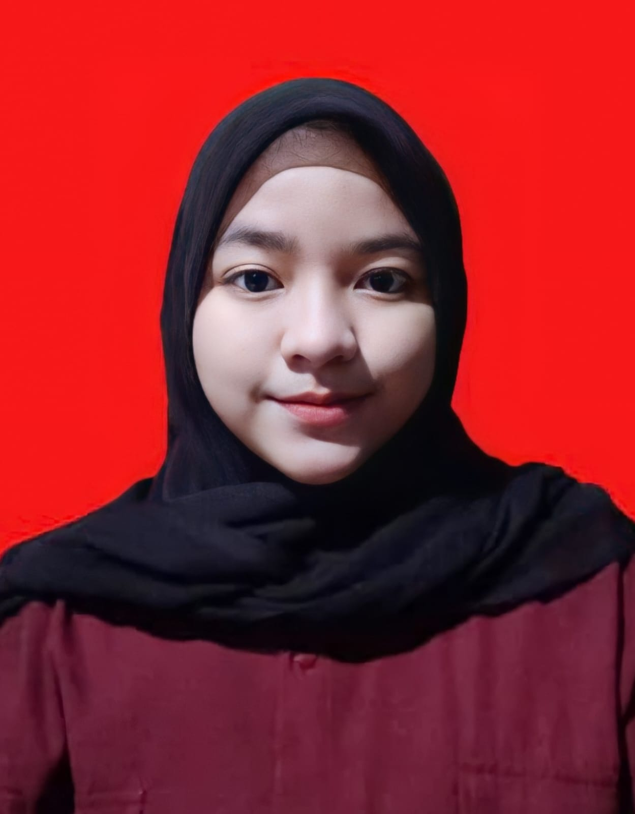

|  |
Tentang Saya Selamat datang dalam dunia pengetahuan yang penuh inspirasi! Saya adalah Mardhotillah Oktania Putri, biasa di panggil abel seorang mahasiswi yang selalu merasa antusias untuk menjelajahi sudut-sudut baru ilmu pengetahuan. Saat ini, saya tengah mengejar gelar STr.Kom di Politeknik Negeri Sriwijaya. Namun, pendidikan Saya tidak hanya terbatas di dalam kelas. Saya aktif terlibat dalam beberapa organisasi, dimana saya belajar tentang kepemimpinan, kolaborasi, dan kejujuran. Saya sangat senang dapat berbagi ide dan pengalaman dengan teman-teman sejawat saya, jadi jangan ragu untuk berbicara dengan saya. | |||
|
Riwayat Pendidikan
| ||||
|
Aktivitas
| ||||
|
Pengalaman
| ||||
| © 2023 by Mardhotillah Oktania Putri | ||||